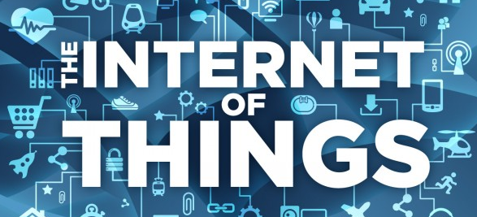

Conceitos e Dúvidas(){
Entrevista
Por: Felipe Brandão Costa e Jackson Andrade Goulart

printf: Para você, qual a melhor definição para o conceito de Internet das Coisas?
Luís Fernando: Para mim, o termo Internet das Coisas significa uma tendência de adicionar, cada vez mais, lógica e conectividade aos dispositivos existentes no nosso dia-a-dia. Se avaliarmos a situação atual da tecnologia, a interação entre a maioria das pessoas e a internet ocorre de poucas formas: usando um computador, notebook, tablet ou smartphone, por exemplo - e não muito além disso. O acesso a toda a capacidade da internet ainda é feito de forma muito pobre, considerando toda a tecnologia que temos à nossa disposição atualmente. Vou dar um exemplo: suponhamos que você queira saber, neste exato momento, e onde quer que você esteja, se tem leite na sua geladeira e a qual temperatura ele está sendo mantido. Ou então digamos que você queira saber o quanto de energia cada eletrodoméstico da sua casa consumiu no último mês, ou quanto está consumindo neste exato momento. Sob o ponto de vista técnico, não existem tantas barreiras para que isso aconteça, e o custo das tecnologias envolvidas é, em geral, bastante acessível. Porém, quase ninguém tem acesso a esses recursos hoje em dia, porque produtos com esses recursos ainda não são encontrados à venda. Enquanto isso, as pessoas trocam de smartphone frequentemente apenas para ganhar um pouco de velocidade na conexão ou alguns pixels a mais na tela, com um impacto mínimo em suas vidas. Isto representa uma grande oportunidade para a indústria, e é neste terreno fértil que a Internet das Coisas vai se consolidando.
Acredito que isso abrirá as portas não apenas para a modernização das coisas com as quais já interagimos no nosso dia-a-dia, mas também para a criação de novos dispositivos que ainda nem podemos imaginar. Além das coisas com as quais interagimos diretamente, temos também coisas que interagem não conosco, mas com outras coisas. Este conceito é conhecido como M2M (machine to machine), mais voltado à área industrial e governamental, mas que também compõe a idéia geral de Internet das Coisas.
printf: Quais os principais dispositivos de Internet das Coisas atualmente disponíveis? Qual a principal utilidade destes dispositivos?
Luís Fernando: É difícil achar um critério para identificar os principais dispositivos, mas é possível citar algumas categorias e produtos que vêem tendo destaque na mídia atualmente. Uma categoria importante é a automação residencial. O termostato inteligente da Nest (nest.com) por exemplo é um produto nessa área, que aprende os padrões de comportamento do usuário e ajuda a economizar energia. Outro exemplo na área residencial é o FlowerPower (parrot.com/flowerpower), que monitora a água, luz, e nutrientes de uma planta. Temos também a categoria de computação "vestível" (wearable computing), com representantes como o Fitbit (fitbit.com), um bracelete que monitora a atividade física do usuário, ou o Pebble (getpebble.com), que é um relógio inteligente. A área industrial e de transportes também é destaque, um exemplo sendo os rastreadores de veículos por GPS utilizados por transportadoras, ou sensores conectados à internet em ambientes industriais. Uma outra área com destaque é a de cidades inteligentes, em temas como economia de energia ou otimização dos transportes. Um exemplo é o SoBi (socialbicycles.com), um sistema de compartilhamento de bicicletas que possuem conexão wireless e GPS para o controle da frota.
}